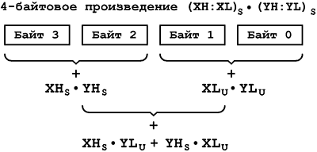

Данная глава посвящена программированию арифметических операций над знаковыми числами, представленными в дополнительном коде (подробней о знаковых числах смотри в приложении Б). Не прибегая к знаковым числам, тяжело решить многие задачи управления. При формировании выходного воздействия любой регулятор либо следящая система опирается на сигнал ошибки, который может изменяться как по величине, так и по знаку. Отрицательные числа могут возникнуть также в результате различных вычислительных операций. И, наконец, числа в дополнительном коде дают возможность использовать действие сложения как альтернативу вычитанию или, если это удобно, наоборот - вместо сложения пользоваться одним только вычитанием.
Особенности работы со знаковыми числами
Система команд AVR изначально оптимизирована для работы со знаковыми числами, а в регистре состояния SREG имеются три специально предназначенных для этих целей флага N, V и S.
Во флаге N хранится знака числа в дополнительном коде. В него копируется содержимое старшего бита результата большинства арифметических и логических операций. Таким образом, N=0 для неотрицательных чисел и N=1 для отрицательных.
Второй бит V из SREG – флаг переполнения в дополнительном коде. В результате действий сложения и вычитания n-разрядных знаковых чисел, в общем случае может быть получен n+1-разрядный результат и флаг V будет установлен, когда произошло переполнение 8-разрядной сетки.
Например, в результате операции сложения двух знаковых чисел
-86 = 0b10101010 и -61 = 0b11000011
(сложение и вычитание знаковых и беззнаковых чисел происходит одинаково) получим следующий результат:
(-86) + (-61) = -147 = 0b101101101 = 0b100000000 + 0b01101101.
Сумма однобайтовых слагаемых вышла за пределы диапазона представления 8-разрядных знаковых чисел -128…+127. В результате переполнения аппаратно будет установлен флаг V.
Обратите внимание на следующее обстоятельство. Если трактовать те же самые числа, как “правильные” двоичные в позиционной системе исчисления (т.е. 170 = 0b10101010 и 195 = 0b10101010), то в результате их сложения также возникнет переполнение:
170 + 195 = 365 = 0b101101101 = 0b100000000 + 0b01101101.
Здесь, очевидно, сумма вышла за пределы 0…255 и ее 9-тый бит окажется во флаге переноса С. Однако флаги V и C будут нести в себе совершенно различный смысл. Бит V всегда сигнализирует о переполнении при знаковом сложении (вычитании), в то время, как С - о переполнении беззнаковом.
Так как в дополнительном коде знак размещается в старшем разряде, то определить его можно, только изначально зная разрядность числа. У 8-разрядных чисел он находится во флаге N, у 9-разрядных, которые возникли в результате переполнения, истинный знак надо искать во флаге S. Значение S получается в результате операции N XOR V. В предыдущем примере S = 0 XOR 1 = 1 (т.е. результат операции сложения отрицательный).
Для изменения знака однобайтовых чисел у AVR имеется инструкция neg Rd (Rd <- 0xFF–Rd+1), которая заменяет собой две команды: com Rd (Rd <- 0xFF–Rd) и inc Rd (Rd <- Rd+1).
Ту же самую операцию легко можно произвести и над числами с большей разрядностью. В этом случае действия разделяются на две части: сначала число нужно проинвертировать, а затем добавить 1.
Так может выглядеть пример дополнения до двух 16-разрядного числа из регистровой пары R25:R24:
|
1 2 3 |
com R24 ;R25:R24 = 0xFFFF – R25:R24 com R25 adiw R24,1 ;R25:R24 = R25:R24 + 1 |
Сложение и вычитание знаковых чисел
Как было сказано выше, существует полная симметрия между действиями сложения и вычитания беззнаковых и знаковых чисел (последние, естественно, должны быть представлены в дополнительном коде). Это означает, что для знаковых вычислений можно использовать те же самые инструкции процессора, что и для беззнаковых. Более того, сами арифметические действия оказываются взаимозаменяемыми.
Очевидно, что
X – Y = X + (-Y) и X + Y = X - (-Y).
Отыскание разности X – Y равносильно добавлению к X числа Y взятого с противоположным знаком, а отыскание суммы X – Y может быть сведено к вычитанию из X числа противоположного по знаку Y.
Это очень сильный вычислительный прием, который при программировании AVR чаще всего используется в следующем контексте.
В их системе команд имеются инструкции вычитания константы из регистра subi Rd,K и sbсi Rd,K (вычитание с заемом), но отсутствуют такие же инструкции сложения регистра с константой. Поэтому добавить число к регистру можно только следующим образом
|
1 2 |
ldi R17,10 ;R17 = 10 add R16,R17 ;R16 = R16 + R17 = R16 + 10. |
Число 10 заносится в промежуточный регистр R17, после чего используется команда сложения двух регистров add Rd,Rr. Однако благодаря использованию дополнительного кода тоже действие будет выглядеть как
|
1 |
subi R16, -10 ;R16 = R16 – (-10) = R16 + 10 |
Точно также к регистровой паре можно добавить 2-байтовое смещение
|
1 2 |
subi XL,low(-0x1234) ; XH:XL + 0x1234 = XH:XL – (-0x1234) sbсi XH,high(-0x1234) |
Умножение и деление знаковых чисел
К сожалению, деление и умножение чисел в дополнительном коде существенно отличаются от подобных действий над беззнаковыми числами. Существуют различные алгоритмы, но все они значительно сложнее и не слишком хорошо подходят для системы команд AVR. Поэтому на практике чаще всего прибегают к действиям над модулями чисел. Для этого, в первую очередь, анализируют и запоминают знаки чисел, затем изменяют знак у отрицательных чисел (преобразуют в равные по модулю положительные числа) и используют беззнаковые операции умножения и деления над их модулями. Полученный результат (беззнаковое число), корректируют с учетом знаков исходных множителей (делимого и делителя) по известным законам алгебры: при одинаковых знаках произведение (частное) остается без изменений, при разных знаках - знак результата должен быть изменен на противоположный.
Рассмотрим пример знакового деления 2-разредного делимого (размещается в регистрах R17:R16) на 1-байтовый делитель (в регистре R20) с помощью подпрограммы беззнакового деления div16_8.
Для изменения знака 16-разрядных чисел на противоположный, можно использовать следующую подпрограмму:
|
1 2 3 4 5 6 |
neg16: com R16 ;R17:R16 = 0xFFFF - R17:R16 + 1 com R17 subi R16,low(-1) sbci R17,high(-1) ret |
Вначале необходимо определить знак будущего частного. Для этого удобно произвести операцию “Исключающее ИЛИ” между знаковыми разрядами обеих чисел и скопировать результат во флаг пользователя T. Если исходные знаки делимого и делителя одинаковые (T=0), то частное – будет неотрицательным числом. В ином случае (T=1) частное отрицательное число, которое нужно будет скорректировать после беззнакового деления:
|
1 2 3 |
eor R17,R20 ;сравниваем знаковые биты bst R17,7 ;запоминаем во флаге T знак будущего частного eor R17,R20 ;восстанавливаем R17 |
Далее, анализируя все те же знаковые разряды, преобразуют отрицательные числа в равные им по модулю положительные:
|
1 2 3 4 |
sbrc R20,7 ;если делитель R20 < 0, neg R20 ;то изменяем знак R20 sbrc R17,7 ;если делимое R17:R16 < 0, rcall neg16 ;то изменяем знак R17:R16 |
Теперь в регистрах R17:R16 и R20 находятся два неотрицательных числа и можно использовать беззнаковое деление. После этого, в случае необходимости, нужно учесть целочисленный остаток (на выходе из подпрограммы деления он находится в R18) и округлить частное до ближайшего целого числа:
|
1 2 3 4 5 6 |
rcall div16_8 ;вызываем подпрограмму беззнакового деления lsr R20 ;если целочисленный остаток от деления cpc R18,R20 ;больше половины делителя (R18 > R20), brcs ncr subi R16,low(-1) ;то округляем частное в большую sbci R17,high(-1) ;сторону, добавляя к нему 1 |
Полученное частное в регистрах R17:R16 нужно скорректировать с учетом его истинного знака:
|
1 2 3 |
ncr: brtc nxt ;если T=1 (частное R17:R16 < 0), rcall neg16 ;то изменяем его знак на противоположный nxt:. |
Как видно, такой подход вносит лишь незначительные затруднения при программировании знаковых операций деления и умножения. Но существует ряд случаев в которых операции над беззнаковыми числами и числами, представленными дополнительном коде, практически неразличимы.
В первую очередь это относится к умножению. У AVR имеются специально разработанные для знаковых операций команды muls Rd,Rr, mulsu Rd,Rr. Это дает возможность эффективно использовать вычислительную схему подобную той, которая используется для умножения беззнаковых чисел. Например, для двух 16-разрядных чисел (индексом S - Sign отмечены знаковые числа, а индексом U - Unsign беззнаковые) (XH:XL)S = 28*XHS + XLU и (YH:YL)S = 28*YHS + YLU она будет иметь вид:
(XH:XL)S*(YH:YL)S = (28*XHS + XLU)*(28*YHS + YLU) = 216*XHS*YHS + 28*(XHS*YLU + YHS*XLU) + XLU*YLU.

Рис.1 Вычислительная схема для умножения двухбайтовых знаковых чисел
с использованием инструкций знакового умножения
На рис.1 показано, в какой последовательности происходит отыскание произведения. Для умножения XLU*YLU надо использовать команду mul Rd,Rr, для XHS*YHS инструкцию muls Rd,Rr, а для XHS*YLU и YHS*XLU - mulsu Rd,Rr (на месте Rd должен обязательно находится знаковый множитель!). Подпрограмма такого знакового умножения:
|
1 2 3 4 5 6 7 8 9 10 11 12 13 14 15 16 17 18 19 20 21 22 23 24 |
; R23:R22:R21:R20 = R17:R16 * R19:R18 ; R23:R22:R21:R20 – знаковое произведение ; R17:R16 – знаковое множимое ; R19:R18 – знаковый множитель ; R1,R0 - вспомогательные регистры
muls16_16: mul R16,R18 ;находим XLU*YLU = R16*R18 и заносим его в movw R20,R0 ;младшие байты произведения R21:R20 muls R17,R19 ;находим XHS*YHS = R17*R19 и заносим его в movw R22,R0 ;старшие байты произведения R23:R22 mulsu R17,R18 ;находим XHs*YLU = R17*R18 и прибавляем его к clr R17 ;байтам R23:R22:R21 произведения sbci R17,0 add R21,R0 adc R22,R1 adc R23,R17 mulsu R19,R16 ;находим YHS*XLU = R19*R16 и прибавляем его к clr R17 sbci R17,0 add R21,R0 ;байтам R23:R22:R21 произведения adc R22,R1 adc R23,R17 ret |
Еще проще найти произведение однобайтового числа XS на 2-байтовое (YH:YL)S:
XS*(YH:YL)S = XS*(28*YHS + YLU) = 28*XS*YHS + XS*YLU.
Подпрограмма знакового умножения 8x16:
|
1 2 3 4 5 6 7 8 9 10 11 12 13 14 15 |
; R21:R20:R19 – знаковое произведение ; R18 – знаковое множимое ; R17:R16 – знаковый множитель ; R1,R0 – вспомогательные регистры
muls8_16: mul R18,R17 ;находим XS*YHS = R18*R17 и заносим его в movw R20,R0 ;старшие байты произведения R21:R20 mulsu R18,R16 ;находим XS*YLU = R18*R16 clr R18 sbci R18,0 add R19,R0 ;и прибавляем его add R20,R1 ;к произведению R21:R20:R19 adc R21,R18 ret |
Деление и умножение на целую степень 2 в дополнительном коде, как и в случае с беззнаковыми числами, равносильно сдвигу числа на один разряд вправо или в лево соответственно. Но здесь существует и одно различие: знаковый разряд числа должен оставаться неизменным. Сдвиг чисел в дополнительном коде иногда называют арифметическим сдвигом. Так выглядит арифметический сдвиг влево (умножение на 2)
(-46)*2 = 0b11010010 << 1 = 0b10100100 = -92
и арифметический сдвиг вправо (деление на 2)
(-46)/2 = 0b11010010 >> 1 = 0b11101001 = -23 .
Последнее действие выполняется командой asr Rd.
При округлении отрицательных чисел нужно придерживаться следующего правила. Если после знакового деления
XS/YS = ZS + RS
образовался целочисленный остаток |RS| ≥ 0,5*|YS|, то к частному
ZS нужно добавить единицу; в противном случае ZS остается без изменений. Например,
XS = -23 = 0b11101001, YS = 2,
XS/YS = ZS + RS = [-12] + {1},
ZS ≈ (-12) + 1 = -11 = 0b11110101.
Подобие алгоритмов деления на целую степень 2 у беззнаковых и знаковых чисел, позволяет очень просто реализовать важный частный случай деления на 3 (см. рис.8, Беззнаковые числа) на основе того же ряда
XS/3 = XS/2 - XS/4 + XS/8 - XS/16 + XS/32 - …
Подпрограмма деления 2-байтового знакового числа:
|
1 2 3 4 5 6 7 8 9 10 11 12 13 14 15 16 17 18 19 20 21 22 23 24 25 26 27 28 |
; R19:R18 = R17:R16/3 ; R19:R18 – знаковое частное ; R17:R16 – знаковое делимое ; R20 – вспомогательный регистр
divs16to3: clr R18 ;очищаем вспомогательные регистры R18,R19 clr R19 ;при входе в подпрограмму ds1: rcall ashft_right brcc PC+2 ;если C=1, ret ;то завершаем деление add R18,R16 ;в ином случае добавляем к накопителю adc R19,R17 ;очередной нечётный член ряда rcall shift_right brcc PC+2 ;если C=1, ret ;то завершаем деление sub R18,R16 ;в ином случае вычитаем из накопителя sbc R19,R17 ;очередной чётный член ряда rjmp ds1
ashft_right: asr R17 ;производим знаковое деление R17:R16 / 2, ror R16 ;получая очередной член ряда clr R20 ;если R20 = R17:R16 + С = 0x10000 adc R20,R16 ;( т.е. знаковое число R17:R16 = 0), clr R20 ;то выходим из подпрограммы с флагом С=1 adc R20,R17 ret |